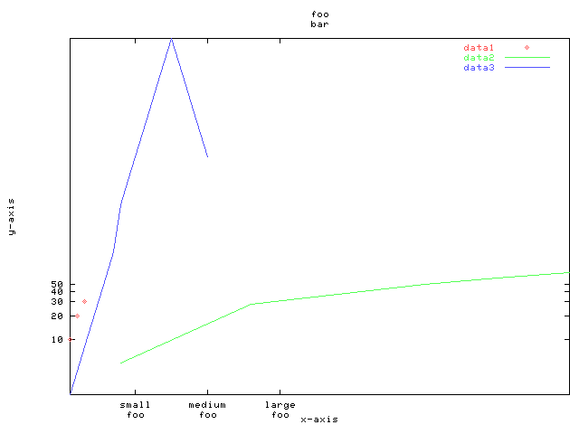

|
|
Chart::Graph::gnuplot() |
gnuplot() is a function in module Chart::Graph that lets you generate graphs on the fly in perl. It was written as a front-end application to gnuplot for hassle-free generation of graphs. gnuplot() can be supplied with many of the same options and arguments that can be given to gnuplot.
#make sure to include Graph.pm
use Graph;
gnuplot(\%global_options, \@data_sets);
gnuplot(\%global_options, [\%data_set_options, \@matrix],
[\%data_set_options, \@x_column, \@y_column],
[\%data_set_options, < filename >], ...] );
%global_options:
| Name | Options | Default |
| "title" | (set your own title) | "untitled" |
| "output type" | "pbm" or "gif" | "gif" |
| "output file" | (set your own output file) | "gnuplot.gif" |
| "x-axis label" | (set your own label) | "x-axis" |
| "y-axis label" | (set your own label) | "y-axis" |
| "x2-axis label" | (set your own label) | none |
| "y2-axis label" | (set your own label) | none |
| "logscale x" | "0" or "1" | "0" |
| "logscale y" | "0" or "1" | "0" |
| "logscale x2" | "0" or "1" | "0" |
| "logscale y2" | "0" or "1" | "0" |
| "xtics" | (set your own tics, see example below) | none |
| "x2tics" | (set your own tics, see example below) | none |
| "ytics" | (set your own tics, see example below) | none |
| "y2tics" | (set your own tics, see example below) | none |
| Name | Options | Default |
| "title" | (set your own title) | "untitled data" |
| "style" | "points", "lines", "impulses", etc... | "points" |
| "axes" | "x1y1", "x2y2", "x1y2", etc... | "x1y1" |
| "type" | "matrix", "columns", "file" | "none" |
use Graph;
gnuplot({"title" => "foo",
"x2-axis label" => "bar",
"logscale x2" => "1",
"logscale y" => "1"
"xtics" => [ ["small\\nfoo", 10], ["medium\\nfoo", 20], ["large\\nfoo", 30]],
"ytics" => [10,20,30,40,50]},
[{"title" => "data1",
"type" => "matrix"}, [[1, 10],
[2, 20],
[3, 30]] ],
[{"title" => "data2",
"style" => "lines",
"type" => "columns"}, [8, 26, 50, 60, 70],
[5, 28, 50, 60, 70] ],
[{"title" => "data3",
"style" => "lines",
"type" => "file"}, "sample"],);

page written by Michael Young